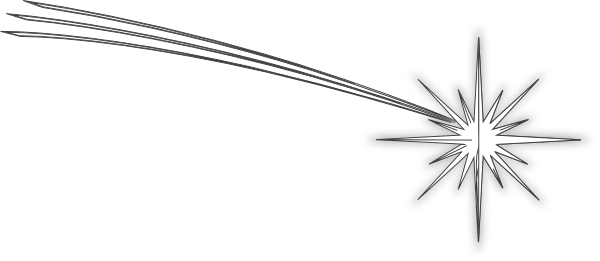

CSC 100 - Introduction to Computers.
An introduction to problem-solving techniques, the fundamental concepts of programming, and the software design process. Topics will include: data types, control structures, scope rules, functions, files, and the mechanics of running, testing and debugging. Problems will be drawn from various science disciplines. * Prerequisite: Precalculus 30, Calculus 30, or Math 102.
* CS majors who have mastered the course material in CSC 110 through other means are eligible to write the CSC 110 bypass exam. * This class may not be taken for credit if CSC 115 or any class above CSC 130 has been successfully completed.
Send an email to the instructor!
This message is updated on Jan 17, 2018